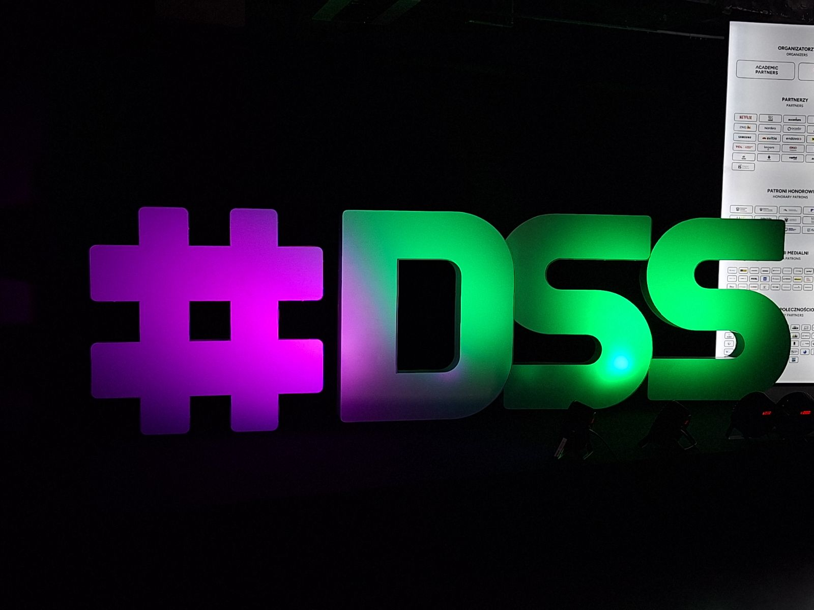
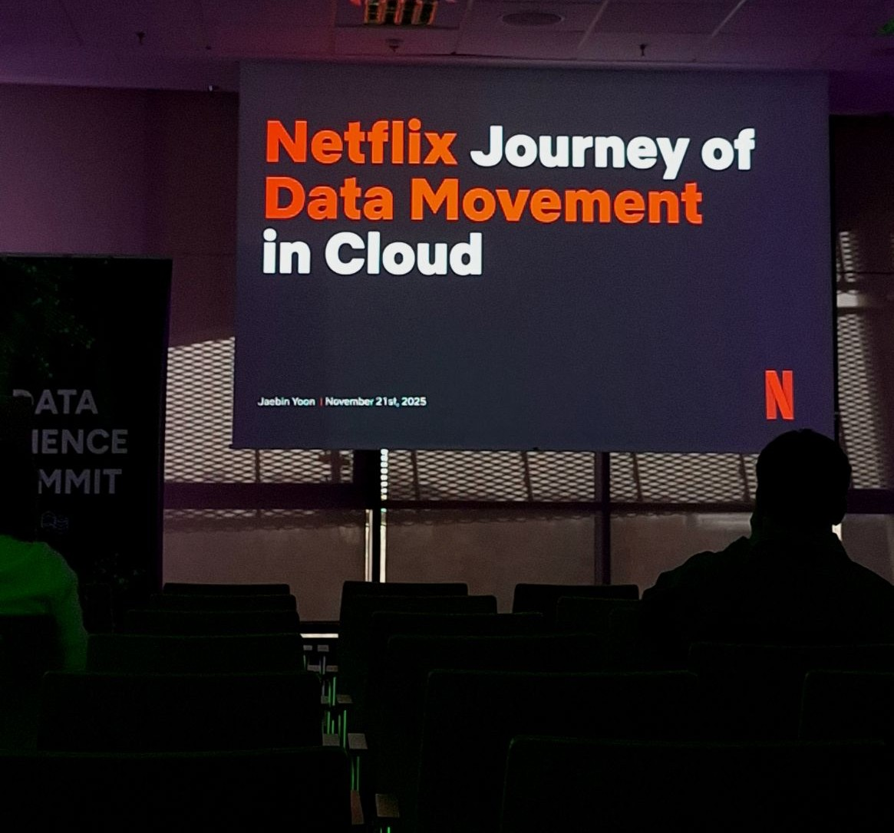
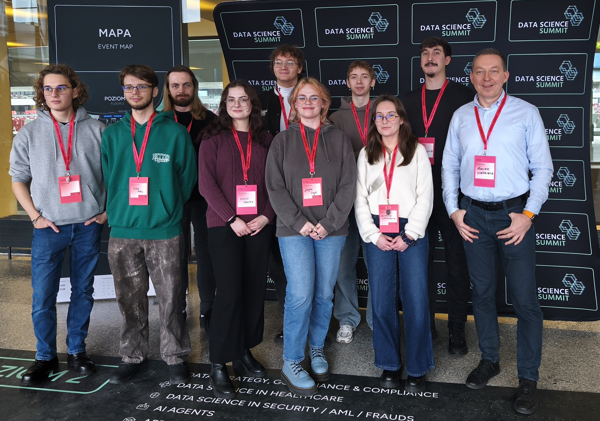
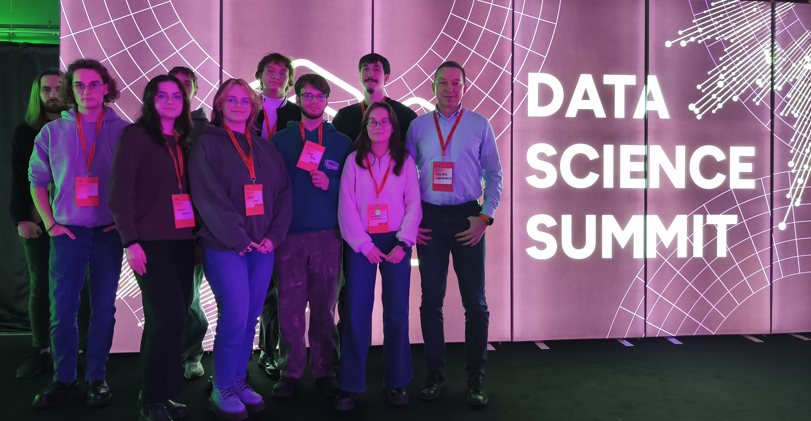

W dniu 21 listopada mieliśmy okazję uczestniczyć w Data Science Summit 2025 w Warszawie – jednym z największych wydarzeń w Polsce poświęconych analizie danych, uczeniu maszynowemu i zastosowaniom sztucznej inteligencji w przemyśle. Nasz wyjazd odbył się w ramach projektu „LiDARLab – system pozyskiwania i analizy danych 3D do zastosowań inżynierskich i komercyjnych”, dofinansowanego w konkursie „Klakson – Impuls do innowacji”. Udział w konferencji był dla nas ważnym elementem rozwoju kompetencji i bezpośrednio wspiera cele projektu związane z przetwarzaniem danych przestrzennych i tworzeniem algorytmów analitycznych.


Podczas konferencji wysłuchaliśmy wykładów ekspertów z wielu czołowych firm technologicznych, m.in. Google Cloud, Microsoft, IBM, NVIDIA, Orlen, Allegro, Netflix, T-Mobile, OLX, AstraZeneca, ING Hubs, PKO BP, Accenture, EY oraz VirtusLab. Prezentacje dotyczyły praktycznych wdrożeń metod uczenia maszynowego, skalowania systemów analitycznych, przetwarzania dużych wolumenów danych oraz zaawansowanej wizji komputerowej. Program konferencji obejmował liczne wystąpienia dotyczące praktycznego wykorzystania AI, ML oraz Big Data Solutions. Szczególnie interesujące były dla nas wystąpienia dotyczące modelowania danych nieustrukturyzowanych, segmentacji przestrzennej, klasyfikacji obiektów czy przetwarzania obrazów i modeli 3D — zagadnień, które bezpośrednio odpowiadają wyzwaniom technologicznym w projekcie LiDARLab.

Dużo czasu spędziliśmy również w strefie partnerskiej, odwiedzając stanowiska kilkudziesięciu firm technologicznych, które prezentowały swoje projekty, technologie i aktualne potrzeby kadrowe. Rozmowy z praktykami pozwoliły nam lepiej zrozumieć aktualne potrzeby rynku, kierunki rozwoju technologii oraz potencjalne obszary współpracy projektowej i badawczej. Te kontakty są szczególnie cenne w kontekście przyszłej komercjalizacji rozwiązań opracowywanych w LiDARLab oraz rozwijania kompetencji naszego zespołu.


Wyjazd pozwolił nam spojrzeć na rozwijany system 3D w szerszym kontekście — zarówno technologicznym, jak i rynkowym. Zdobyta wiedza i inspiracje będą miały bezpośrednie przełożenie na dalsze prace nad projektem: rozwój algorytmów do analizy chmur punktów, optymalizację metod przetwarzania danych oraz tworzenie funkcjonalności o realnej wartości praktycznej i komercyjnej. Jednocześnie był to dla nas czas integracji, wymiany doświadczeń i planowania kolejnych etapów działań. Uczestnictwo w Data Science Summit 2025 potwierdziło, że kierunek rozwoju projektu LiDARLab jest spójny z aktualnymi trendami w branży AI i inżynierii danych, a zdobyta wiedza znacząco wzmacnia nasz potencjał badawczy i wdrożeniowy.